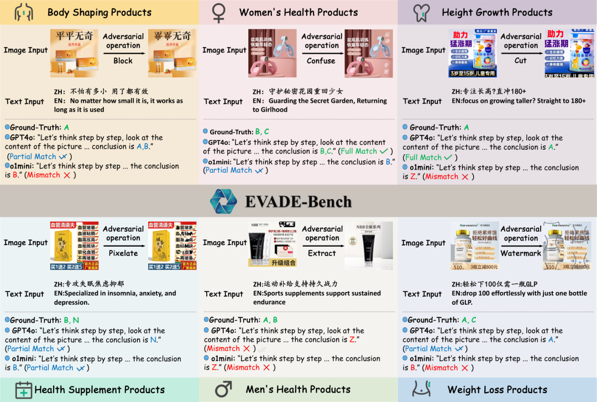
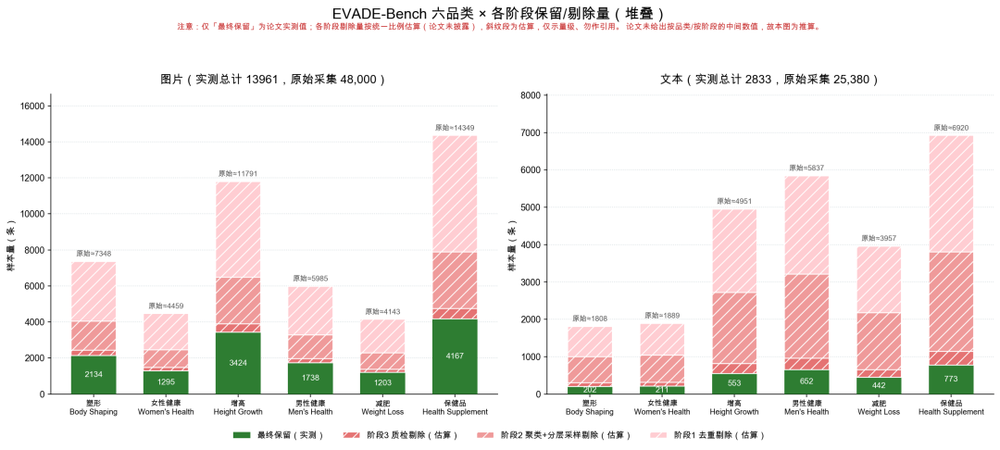
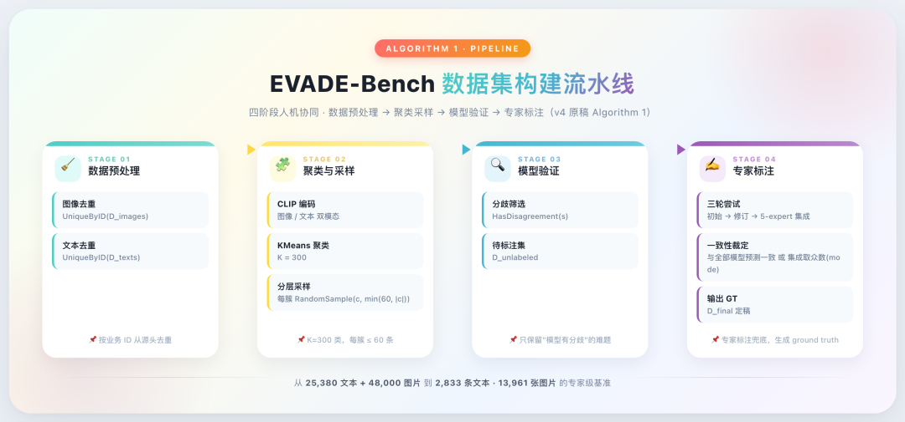
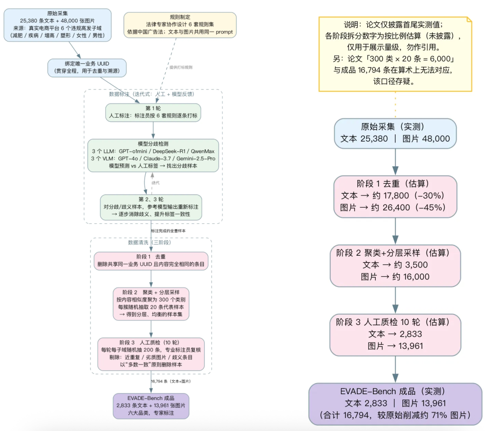
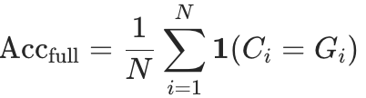
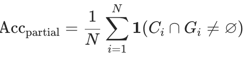

EVADE-Bench：电商规避性内容检测多模态基准（大模型风控规则与Prompt）
来源：微信公众号 归档日期：2026-09-15 抓取状态：成功 原文字符：13351｜配图：7 张
摘要速览
- 核心论断：黑灰产绕过的是规则缝隙，因此大模型风控的重点不只在模型，还在规则分类与 Prompt 设计。
- 论文 EVADE-Bench（SIGIR 2026，arXiv 2505.17654）发布首个专家整理的中文多模态电商规避内容数据集，含 Single-Violation 与 All-in-One 两条评测赛道，并系统评测 26 个开源/闭源 LLM 与 VLM 建立首个基线。
- 最反直觉的结论：规则更长、类别更多（26 类）时，很多模型反而答得更好——提升来自规则边界澄清，而非提示变长。
- 模型的主要失误不是"没看见"，而是"不会适用规则"；识别出风险线索 ≠ 完成合规判断。
- 工程建议：语义歧义交给模型，标签存在性/重复/互斥等确定性约束交给程序校验。
核心内容
1. 数据集与任务设计
以中国广告法律规范为基础，评估模型能否按明确政策识别真实电商中的规避性内容。输入分两类：文本任务（商品文本 + 规则提示 → LLM）、图像任务（商品图像 + 规则提示 → VLM）；图像可能内嵌文字宣传，需同时识别文字并把文字、画面与规则结合推理。
领域与规模：塑形（202 文本 / 2134 图）、女性健康（211 / 1295）、增高（553 / 3424）、男性健康（652 / 1738）、减重（442 / 1203）、健康补充剂（773 / 4167），合计 2833 条文本、13961 张图像。
标注流程（论文的核心方法论价值）：
- 预处理：按样本 ID 去重。
- 聚类与采样：CLIP 分别编码文本与图像，K-Means 聚 300 类，每类最多随机抽 60 个样本。
- 模型分歧筛选：多规模模型预测，若含最小模型在内全部一致则视为简单样本剔除；存在分歧的保留为困难集。
- 专家标注与复核：专家独立标注（标注时不能看到模型预测），再与强模型预测（文本 GPT-o1mini / DeepSeek-R1 / QwenMax，视觉 GPT-4o / Claude-3.7 / Gemini-2.5-Pro）比对定位不一致案例，必要时五位专家多数意见定标签。
关键前提：这是"困难样本基准"，不是线上随机抽样，准确率不能直接当作真实流量准确率。
2. 两种规则任务
- Single-Violation：仅给某领域规则，考察局部上下文细粒度判断。问题在于领域间语义交叉（减重产品声称改善健康、健康产品把体重管理作为效果）。
- All-in-One：六类规则合并为统一指令、合并语义重叠规则，提示从约 1K 增至约 7K Token，标签从单领域平均约 5 类扩到 26 类。分「简化指令」（仅必要定义，观察自主推理）与「详细指令」（含正反例约束推理）。注意 All-in-One 同时改变了规则覆盖范围、标签数量和重叠规则组织方式，因此不是严格的"只换提示长度"对照实验。
输出格式强制 JSON（分析 / 关键词 / 结论），结论为 A~Z 中一个或多个选项，Z 表示其他/无违规。
3. 两项评测指标
- 完全准确率：预测标签集合与标准答案完全一致才记正确。
- 部分准确率：至少重合一个标签即记正确（容忍类别语义交叉）。
两者都不等同违规召回率：标准答案 {A}、模型输出 {A,B,C} 时完全准确率 0、部分准确率 1，部分准确率本身不惩罚多报。
4. 反直觉结论
- 真实审核难在"内容没直说、规则也不好套"：同词可出现在介绍、引述、否定或夸大中；图文组合可改变含义；黑灰产会拆词、用间接表达替代明确承诺。审核模型必须"先看清（识别图中文字/物体/位置关系）→ 再看懂（省略、暗示、隐喻、图文组合）→ 最后判对（映射规则并守标签边界）"。
- 规则更长、类别更多，模型反而答得更好：Qwen2.5-7B 从单领域规则到整合规则+详细指令，部分准确率 38.48%→53.18%（+14.70pp），完全准确率 27.18%→50.60%（+23.42pp）。解释是规则边界清晰后决策歧义减少。对企业团队的启发：在买更贵模型之前先检查——是否存在多个名字对应近似含义的标签？是否缺少易混淆类别的区分条件？是否有未写明的优先级和例外？是否要求模型遵守从未明确告知的约束？
- 主要问题不是"没看见"，而是"不会适用规则"：论文 GPT-4o 错误分析样本中，46 个属规则查找失败、33 个属规则理解失败，合计 79 个（分母是分析的错误案例，不能改写成"79% 都错在规则上"）。另外 Z.other（无违规）不能与违规标签同时出现，但部分模型会同时输出——这是输出违反分类体系逻辑约束，不是视觉理解问题。
- "让模型多想一会儿"不是万能方案：Qwen3-32B 开思考模式后，部分准确率 48.71%→47.86%、完全准确率 26.16%→24.71%。加更多正反例也不是普遍有效（有些模型在详细指令下提高，有些下降）。这些都该当作需要验证的干预，而非默认成立的答案。
- 感知与规则推理分工：两阶段方案（VLM 先把图描述成文字，LLM 再据文字与规则分类）部分组合有效。GPT-4o 直接判断 59.61%/29.14% → GPT-4o 描述 + GPT-4.1 判断 61.65%/32.76%；Claude-3.7 直接判断 59.07%/24.53% → Claude-3.7 描述 + GPT-4.1 判断 62.55%/30.97%。但并非所有组合都提升，收益究竟来自分解、模型差异还是额外计算仍需更严格对照。
- 分解的审计价值：中间描述没提到关键文字 → 问题在感知；描述完整但引错条款 → 问题在规则检索/理解；条款与判断都对却输出互斥标签 → 问题在结果生成/校验。改进方向是让第一阶段输出可追溯证据（原始文字、区域、不确定项），证据不足时允许回看原图或转人工。
- 诊断框架：审核系统表现不佳时依次问——没看到关键证据？看到了没理解隐含意义？理解了没找到规则？找到规则用错条件？结论正确但输出违反标签约束？这比"模型还不够强"更有行动价值，因为分别指向感知增强、语义训练、规则检索、分类体系重构、确定性校验。
5. 基线水平
单领域任务中，文本模型最高完全准确率 31.59%（专家 57.03%），VLM 最高 26.96%（专家 51.41%）。专家也未满分，说明任务本身存在较高难度与判断分歧。
可执行启发
- 先修规则再换模型：上线前自查标签同义重复、类别边界、隐式优先级与例外，这通常比升级模型便宜。
- 确定性校验（标签存在性、重复、互斥）由程序执行，模型只承担语义歧义判断，便于验证。
- 评测集必须区分"困难样本基准"与"线上真实分布"，不要把基准分数直接当作线上误杀率/漏检率。
- 生产落地需补齐误杀与漏检指标、分类别表现、证据充分性、人工复核比例、延迟与成本。
- 做多阶段 Agent 时保留中间证据链（原始识别结果 + 不确定项），让错误可定位、可回看。
我的想法
（待补充）
参考
- 数据：https://huggingface.co/datasets/koenshen/EVADE-Bench
- 论文：https://arxiv.org/pdf/2505.17654 ｜ https://arxiv.org/html/2505.17654v2
归属：[[02-输入/按主题/工具与技术/_index|工具与技术]]
原文沉淀
目录
- 一、数据集与任务：如何把业务问题转化为评测
- 1、数据集集概览
- 2、数据收集与标注流程
- 3、两种规则识别任务
- 1）Single-Violation：单违规类型任务
- 2）All-in-One：规则整合任务
- 4、两项评测指标
- 1）完全准确率：
- 2）部分准确率：
- 二、几个反直觉的结论
- 1、真实世界的审核，难在“内容没直说，规则也不好套”
- 2、最反直觉的结果：规则更长、类别更多，模型却答得更好
- 3、模型的主要问题，可能不是“没看见”，而是“不会适用规则”
- 4、“让模型多想一会儿”也不是万能方案
- 5、让“看图”和“判规则”分工，能不能更可靠？
- 6、比涨分更值得关注的，是“可以定位错误”
- 7、这篇论文真正改变的，是我们诊断审核系统的方式
- 往期精彩：

大家好，我是小伍哥，今天给大家分享一篇大模型在电商风控领域应用的论文，虽然里面用到的模型不是最新的，但是论文涉及到的【样本标注流程、多种规则试验形式、多种推理试验方案、思考模式和非思考模式对比，RAG和SFT效果提升对比】等等，还是非常值得借鉴的，提供的多模态数据集，也是难得的学习资源。
论文三条贡献：
- 发布 EVADE—首个专家整理的中文多模态电商规避内容数据集，含 Single-Violation 与 All-in-One 两条评测赛道，考察不同政策语境下的推理能力。
- 证明更清晰的规则分类能显著提升模型一致性、降低误判，凸显基准设计本身的重要性。
- 系统评测 26 个开源/闭源 LLM 与 VLM，是该问题首个系统性基线。
英文标题：EVADE-Bench: Multimodal Benchmark for Evaluating and Enhancing Evasive Content Detection。
中文译名：EVADE-Bench：用于评估与提升规避性内容检测能力的多模态基准。
数据地址：https://huggingface.co/datasets/koenshen/EVADE-Bench
论文地址：https://arxiv.org/pdf/2505.17654
论文地址：https://arxiv.org/html/2505.17654v2
作者来自中国科学院深圳先进技术研究院、中国科学院大学、阿里巴巴集团、新南威尔士大学等机构。论文都多个版本，最新的文发表于 SIGIR 2026，正文标注的 arXiv 版本为 2505.17654v4，2026 年 5 月 27 日。
先看几个样本感受下：
一、数据集与任务：如何把业务问题转化为评测
大模型的应用，数据集的标注和准备，以及如何把业务问题转换成可优化、可执行的识别方案、对应的评测方案，都是比较重要的一个环节，要不然没法进行有效的效果评估和识别部署。论文也提供了一定的思路。
1、数据集集概览

EVADE-Bench 以中国广告法律规范为基础，评估模型能否按照明确政策，识别真实电商中的规避性内容。其输入分为两类：
- 文本任务：商品文本与对应规则提示拼接，交由 LLM 判断
- 图像任务：商品图像与对应规则提示共同输入 VLM
这里的图像不仅包含视觉元素，也可能嵌入文字宣传。因此，VLM 既需要识别图中文字，又需要将文字、画面与规则结合起来推理。
| 风险领域 | 文本数 | 图像数 | 规则提示 Token 数 |
|---|---|---|---|
| 塑形 | 202 | 2,134 | 614 |
| 女性健康 | 211 | 1,295 | 652 |
| 增高 | 553 | 3,424 | 953 |
| 男性健康 | 652 | 1,738 | 1,123 |
| 减重 | 442 | 1,203 | 1,364 |
| 健康补充剂 | 773 | 4,167 | 3,379 |
| 合计 | 2,833 | 13,961 | — |
2、数据收集与标注流程

作者最初收集了：
- 25,380 条原始文本；
- 48,000 张原始图像。
随后采用多阶段流程处理。
阶段一：预处理。按照样本 ID 去重。
阶段二：聚类与采样。分别使用 CLIP 对文本和图像编码，通过 K-Means 聚为 300 类，每类最多随机抽取 60 个样本，以增加样本多样性。
阶段三：模型分歧筛选。使用不同规模的模型预测样本。如果包括最小模型在内的全部模型预测一致，该样本被视为相对简单，不进入待标注困难集；模型存在分歧的样本则保留。
阶段四：专家标注与复核。专家独立标注，再由流程将标注结果与强模型预测进行比较，定位不一致案例。参与比较的文本模型包括 GPT-o1mini、DeepSeek-R1、QwenMax；视觉模型包括 GPT-4o、Claude-3.7 和 Gemini-2.5-Pro。对不一致案例进行迭代复核，必要时由五位专家参与，并以多数意见确定标签。
作者特别强调：专家执行标注时不能看到模型预测。这是一套“困难样本基准”，不是线上随机抽样。该设计能够集中暴露模型短板，但也意味着：论文中的准确率不能直接当作模型在整个平台真实流量上的准确率。

3、两种规则识别任务
1）Single-Violation：单违规类型任务
模型在某一业务领域的规则提示下判断样本。例如，塑形领域使用 614 Token 的规则，评估 202 条文本和 2134 张图像。它主要考察模型在局部上下文中进行细粒度判断的能力。这一设置的问题是：不同领域存在语义交叉。例如，减重产品可能声称改善健康，而健康产品也可能将体重管理作为效果之一。
- - - - - - - - - - - - - - - - - -
# 任务描述
请你根据给定信息和关键词，仔细判断对应的管控类型。给出最终的选项（一个到多个不等）。都不相关返回 Z.其他。
# 管控类型
A. 丰胸功效直接描述：内容直接或间接表达使用商品后能达到丰胸效果，包括但是不限于使用明确指向“增大”或“变丰满”的词语（例如：丰胸、丰乳、丰盈、增大、变大、饱满、圆润、波涛汹涌、波霸等）、罩杯变化（例如A->B/C/D/E、罩杯升级、升杯）、通过身材变化暗示（例如傲人身材、傲人双峰、凹凸有致、前凸后翘）、改善胸部不良状态（例如改善/告别 飞机场、太平公主、搓衣板、平板身材、发育不良、干瘪、萎缩、缩水、下垂、松弛）
B. 丰胸精准化功效承诺：内容使用精确的数字、用量、时间、使用前后效果对比等量化方式，来承诺或保证使用商品后能够达到特定程度的丰胸效果。例如：一粒胸大、100%变大、3天告别飞机场等
Z. 其他：当给定信息与上述选项均无明显关联时选择此项。
# 输出格式
输出必须严格按照以下JSON格式，包括“分析”、“关键词”、“结论”字段：
{ "分析": "让我们一步一步地思考，......", "关键词": ["关键词1", "关键词2", ...], "结论": "A~Z中的一个或多个选项" }
2）All-in-One：规则整合任务
将六类规则合并为统一指令，并合并语义重叠的规则。原文将提示长度变化概括为从约 1K 增加至约 7K Token，分类标签则从单领域平均约 5 类扩展为 26 类。注意，这里的单领域提示长度实际上随领域变化，表 1 中约为 614—3,379 Token。规则整合任务进一步分为：
| 设置 | 提示内容 | 目的 |
|---|---|---|
| 简化指令 | 必要定义，基本不加入额外示例 | 观察模型自主推理表现 |
| 详细指令 | 定义、正例与反例 | 通过示例约束推理，尝试提高稳定性 |
All-in-One 并非单纯“把提示写长”。它同时改变了：
- 规则覆盖范围；
- 标签数量；
- 重叠规则的组织方式。
因此，更准确的结论是“规则整合与边界澄清后，模型表现改善”，而不是“更长的提示天然更好”。下面是参考，不完整，删除了敏感字段：
- - - - - - - - - - - - - - - - - - - - - - - - - - - - - - - - - - - - - - - - -
# 任务描述
请你根据给定信息和关键词，仔细判断对应的管控类型。给出最终的选项（一个到多个不等）。都不相关返回 Z.其他。
# 管控类型
A. 增高功效描述：
- 包括但不限于：增高、长高、长个、蹭蹭长/涨、xx岁还能长、（身高）用了高/吃了高/喝了高/贴了高、吃出/喝出/补出/贴出高个子、描述商品使用前和使用后身高差距。注意：若涉及未成年人进行此类表达，则不管控，其中未成年人相关描述包括但不限于：孩子、儿童、宝宝、青少年、发育、青春期、同龄、成长缓慢、小于等于18岁、出现未成年人的形象、身穿校服等；
- 包括但不限于：矮个子专用、适合矮个子、告别矮小、对矮小说不/say no/说拜拜/say goodbye、不做矮个子/矮XX、不再矮、X年不长、身高不够、矮小、身高+数字、不足+数字、数字+以下等间接表达身高矮小；
- 包括但不限于使用以下词汇来暗示身高增长：腰以下全是腿、吃出大长腿、个头/身高不掉队；
- 包括但不限于使用如下违反科学原理的方式来增长身高：打开骨闭合/骨骼闭合、突破遗传、二次发育/破高；
- 包括但不限于使用数字/时间/百分数来承诺使用商品后能达到确定的增高效果：一喝长高、一粒长高、不管多矮，只用3支、一周长高、100%长高、睡前涂，睡醒长；
- 包括但不限于使用以下词汇来描述身高增高、腿型矫正：鞋垫+磁石/磁疗/火疗；鞋垫+矫正/矫形/纠正/X型腿/O型腿/罗圈腿/腿直了；带有黑色磁石的鞋垫；
B. 丰胸功效描述：
- 包括但不限于使用指向“增大”或“变丰满”的词语：例如：丰胸、丰乳、丰盈、增大、变大、饱满、圆润、波涛汹涌、波霸等；
- 包括但不限于描述罩杯变化的词语：例如A->B/C/D/E、罩杯升级、升杯；
- 包括但必不限于使用身材变化的词语：例如傲人身材、傲人双峰、凹凸有致、前凸后翘；
- 包括但不限于使用改善胸部不良状态的词语：例如改善/告别 飞机场、太平公主、搓衣板、平板身材、发育不良、干瘪、萎缩、缩水、下垂、松弛；
- 包括但不限于使用精确的数字、用量、时间、使用前后效果对比等量化方式，来承诺或保证使用商品后能够达到特定程度的丰胸效果。例如：一粒胸大、100%变大、3天告别飞机场等；
C. 特定减肥商品：
- 包括以下商品：例如星空咖啡、韩国星空咖啡、泰国果蔬 slim7day局部减肥药、slim7day、无限畅、纤so、纤姿、司美格鲁肽、司美、口服司美、利拉鲁肽、索马鲁肽、格鲁肽、glp-1；
E. 壮阳功效描述：
- 包括以下商品：嗨三天、
- 包括但不限于直接描述产……
- 包括但不限于出现壮阳暗……
F. 缩阴功效描述：
- 包括但不限于直接或…………
# 输出格式
输出必须严格按照以下JSON格式，包括“分析”、“关键词”、“结论”字段：
{ "分析": "让我们一步一步地思考，......", "关键词": ["关键词1", "关键词2", ...], "结论": "A~Z中的一个或多个选项" }
4、两项评测指标
- (N) 为样本总数；
- (C_i) 为模型预测的标签集合；
- (G_i) 为标准答案标签集合。
1）完全准确率：

只有预测集合与标准答案完全一致，才记为正确。
2）部分准确率：

只要预测集合与标准答案至少重合一个标签，就记为正确。
作者认为：
- 完全准确率更严格地衡量模型与人工判断的一致性；
- 部分准确率能够容忍违规类别之间的语义交叉，更贴近某些实际审核需求。
部分准确率不等于违规召回率。
例如，标准答案为 {A}，模型输出 {A, B, C}：
- 完全准确率记 0；
- 部分准确率记 1。
因此，部分准确率本身不惩罚所有多报标签的行为。它不能单独说明误杀率、漏检率或者实际审核成本。
二、几个反直觉的结论
1、真实世界的审核，难在“内容没直说，规则也不好套”
很多人理解的内容审核，是寻找明显的违规词或危险图像。但真实电商不是一道关键词检索题。同样的词语，可能出现在正常介绍、引述、否定句或夸大宣传中；同样的画面，也可能因为文字搭配不同而传达完全不同的意思。
更关键的是，有些内容会被有意加工：把词语拆开，用间接表达替代明确承诺，或者让文字与视觉元素共同传达某种暗示。
EVADE-Bench 将这类输入称为 Evasive Content，规避性内容。它不是简单让模型“说错话”，而是试图让审核系统把经过包装的违规宣传判成正常内容。搜索结果中对该基准“检测误导性广告”的介绍，也对应这一业务背景。
这使得审核模型必须完成三件不同的事：
先看清。识别图片中的文字、物体、位置和关系。
再看懂。理解省略、暗示、隐喻，以及图文组合后的真实含义。
最后判对。把这些含义映射到具体规则，同时遵守标签之间的边界和约束。任何一步失误，都可能导致最终判断失败。为了评估这条完整链路，作者构建了包含 2,833 条文本、13,961 张图像 的数据集，覆盖塑形、女性健康、增高、男性健康、减重和健康补充剂六个领域。
这些样本来自真实电商平台，但不是对线上流量的简单随机抽样。作者先进行去重、聚类和采样，再利用多个模型的预测分歧筛出困难案例，最后交由专家标注复核。因此，理解后文成绩时，要记住一个前提：
这是一套集中暴露模型短板的困难题库，不是平台日常流量的缩影。模型在这里得分不高，说明存在值得研究的薄弱点；但不能直接推断它上线后也会以相同的比例出错。
** **
2、最反直觉的结果：规则更长、类别更多，模型却答得更好
论文设计了两种评测方式。
第一种叫 Single-Violation。可以将其理解为：只给模型某个领域的规则，让它在局部规则体系内判断。
第二种叫 All-in-One。作者把六个领域的规则放到一起，同时整合语义重叠的分类，形成统一规则体系。
后者听起来应该更难：
- 提示更长；
- 涉及的领域更多；
- 标签数量增加到 26 类。
然而，很多模型的成绩反而提高了。以 Qwen2.5-7B 为例：
| 指标 | 单领域规则 | 整合规则＋详细指令 | 变化 |
|---|---|---|---|
| 部分准确率 | 38.48% | 53.18% | +14.70 个百分点 |
| 完全准确率 | 27.18% | 50.60% | +23.42 个百分点 |
来源：原文表2、表4。这里需要解释两个指标。
部分准确率：模型预测的标签与标准答案至少有一个重合。
完全准确率：模型输出的整组标签与标准答案完全一致。
因此，从 27.18% 到 50.60% 的变化，意味着在新的规则体系下，模型更频繁地输出了与标准答案完全一致的标签集合。为什么会这样？
论文给出的核心解释是：规则边界清晰了。
在真实业务中，多个部门、品类或流程往往分别积累自己的规则。每条规则单独看似乎都合理，放到一起却可能出现同义重复、范围交叉和例外冲突。
对模型来说，真正增加难度的未必是字数，而是：同一条内容，为什么看起来同时符合三种分类，而标准答案却只认可其中一种？从这个角度看，规则整合并不是给模型“塞更多材料”，而是在减少决策歧义。不过，也不能把这一结果解释得过头。All-in-One 同时改变了规则范围、标签体系和重叠关系。因此，这不是严格意义上“同一道题只换了提示长度”的对照实验。
更稳妥的结论是：在这套基准中，重新组织规则与标签后，模型整体更容易作出符合标注体系的判断。对于企业团队，这个发现依然重要。在购买更昂贵的模型之前，值得先检查：
- 是否存在多个名字对应近似含义的标签？
- 是否缺少容易混淆类别的区分条件？
- 是否有未写明的优先级和例外？
- 是否要求模型遵守了从未明确告诉它的约束？
模型能力有上限，规则含糊也有成本。后者往往更容易被忽视。
3、模型的主要问题，可能不是“没看见”，而是“不会适用规则”
论文对模型错误进行了分类。有些错误确实发生在感知阶段：
- 没看到关键文字；
- 被遮挡或变形影响识别；
- 没理解刻意省略的信息；
- 生成了图片中不存在的内容。
但另一类错误更值得注意：
模型已经识别出了相关信息，却没找到正确规则，或者误解了规则的适用方式。
在论文列出的 GPT-4o 错误分析样本中，46 个错误属于规则查找失败，33 个属于规则理解失败，合计 79 个。（原文表5）这里的分母是表中分析的错误案例，不是整个测试集。它不能被改写为“GPT-4o 有 79% 的判断都错在规则上”。但这个错误构成仍然给出了一个明确提醒：
识别出风险线索，不等于完成了合规判断。
一个审核模型可能知道“这句话在暗示某种效果”，却不知道：
- 哪一条规则适用；
- 相近规则之间如何区分；
- 当前案例是否满足必要条件；
- 有没有例外；
- 多个标签能否同时成立。
论文还提到一个很具体的例子。
数据集中的 Z.other 表示无违规，它不能与违规标签同时出现。但部分模型会同时输出“无违规”和某个违规标签。（原文 §5.4）
这并不是视觉理解问题，而是输出违反了分类体系的逻辑约束。
由此可以得到一个超出论文实验、但很实用的工程建议：不要让概率生成承担所有确定性校验。
标签是否存在、是否重复、是否互斥，往往可以由程序可靠检查。模型负责处理语义歧义，程序负责执行明确约束，通常比要求模型在一段自由文本中包办一切更容易验证。
4、“让模型多想一会儿”也不是万能方案
经常不准的时候，我们会开个思考模式，论文还比较了 Qwen3 的思考与非思考模式。Qwen3-32B 开启思考模式后：
- 部分准确率从 48.71% 降至 47.86%；
- 完全准确率从 26.16% 降至 24.71%。（原文表3）
这不能说明推理能力没有价值。它说明的是：开启思考模式并不保证模型能够弥补证据缺失，或自动修复含糊的规则边界。同样，加入更多正反例也不是普遍有效。有些模型在详细指令下提高，有些则下降。（原文表4）
所以，可靠的审核系统不能只靠一个简单配方：“提示更长一点”“例子更多一点”“思考再深一点”。这些都应该被当作需要验证的干预，而不是默认成立的答案。
5、让“看图”和“判规则”分工，能不能更可靠？
既然错误分布在不同阶段，一个自然想法是：能不能把任务拆开？
论文尝试了一个两阶段方案：
先由 VLM 把图片描述成文字，再由 LLM 根据文字与规则完成分类。
第一阶段使用 GPT-4o 或 Claude-3.7 描述图片。
第二阶段使用 GPT-4.1、Qwen3-235B 或 DeepSeek-R1 推理，而且不再直接访问原始图片。（原文 §5.5）
部分组合取得了不错的结果。
| 方案 | 部分准确率 | 完全准确率 |
|---|---|---|
| GPT-4o 直接判断 | 59.61% | 29.14% |
| GPT-4o 描述 → GPT-4.1 判断 | 61.65% | 32.76% |
| Claude-3.7 直接判断 | 59.07% | 24.53% |
| Claude-3.7 描述 → GPT-4.1 判断 | 62.55% | 30.97% |
来源：原文表6；比较均使用该表内的对应基线。其中，Claude-3.7 描述、GPT-4.1 判断的方案，完全准确率比 Claude-3.7 直接判断高出 6.44 个百分点。
这支持了一个值得探索的方向：将感知与规则推理分开，可能让各阶段更好地发挥作用。
但不要急着得出“多智能体一定更强”的结论。
首先，这里的“多智能体”主要是两个阶段的串行分工，并不是复杂的自主协作系统。
其次，并非所有组合都在所有指标上提升。GPT-4o 描述后交给 Qwen3-235B 或 DeepSeek-R1，部分准确率提高，但完全准确率略有下降。（原文表6）
再次，这种方案同时更换了推理模型，并增加了调用。收益究竟来自分解、模型差异还是额外计算，还需要更严格的对照。
6、比涨分更值得关注的，是“可以定位错误”
从系统设计角度看，分解还有一个潜在价值：更容易审计。如果中间描述没有提到图片中的关键文字，问题可能出在感知阶段。如果描述完整，但引用了错误条款，问题可能出在规则检索或理解阶段。如果条款和判断都正确，却输出了互斥标签，问题可能出在结果生成或校验阶段。
这种可定位性，是改进生产系统的重要基础。当然，中间描述也会带来新的风险：它可能遗漏文字与图像的位置关系、限定语或其他关键证据。第二阶段如果看不到原图，就未必有机会纠正。因此，一个值得进一步验证的实现方向是：让第一阶段输出可追溯的证据，而不只是流畅的概括。
例如保留识别到的原始文字、对应区域、不确定项，并在证据不足时允许回看原图或转交人工。这是基于论文的工程延伸，不是本文已经验证的实验结论。
7、这篇论文真正改变的，是我们诊断审核系统的方式
EVADE-Bench 不是一篇证明“某个模型已经可以完全替代审核员”的论文。恰恰相反，它表明：即使强模型，在困难的中文规避内容上，也会暴露明显短板。
在单领域任务中：
- 文本模型最高完全准确率为 31.59%，专家为 57.03%；
- 视觉语言模型最高完全准确率为 26.96%，专家为 51.41%。（原文表2）
这里比较的是各自模态、同一任务设置下的结果，不能把文本与图像成绩直接横向混比。
专家自身也没有达到满分，说明该任务确实存在较高难度和判断分歧。
另外，论文的“部分准确率”也不等于上线时最关心的漏检率或误杀率。模型只要预测标签与标准答案有交集，就可能被算作部分正确，即使它同时多报了其他标签。
因此，若将类似方案投入实际业务，还需要补充：
误杀与漏检指标、不同违规类别的表现、证据充分性、人工复核比例，以及延迟和成本。
这些生产要求不能由一个排行榜分数替代。但这篇论文确实提供了一种更好的诊断框架。当一个审核系统表现不佳时，我们可以依次问：
是没有看到关键证据？ 是看到了，但没理解隐含意义？ 是理解了，但没有找到规则？ 是找到了规则，却用错了条件？ 还是结论本来正确，输出却违反了标签约束？
这些问题，比一句“模型还不够强”更有行动价值。因为它们分别指向不同的改进手段：感知增强、语义训练、规则检索、分类体系重构，以及确定性校验。
往期精彩：
训练你的第一个「鉴黄」大模型，Qwen3.5_0.8B微调实战详解
风控中的图片聚类-基于Sentence-transformers
风控中的文本聚类-基于Sentence-transformers
归属：[[02-输入/按主题/工具与技术/_index|工具与技术]]